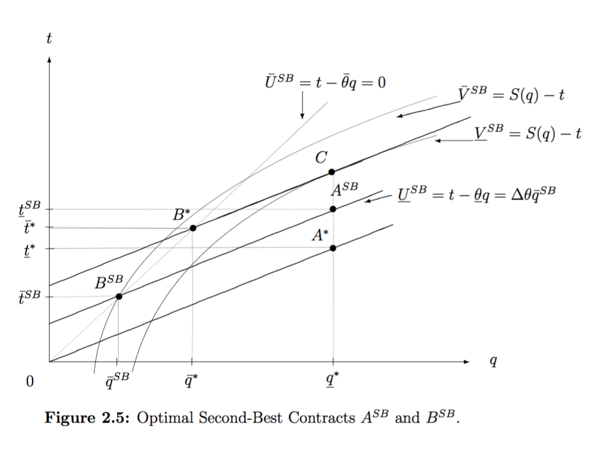

11 Supplement: Asymmetric information (optional)
Exeter Students: I covered much of this material in a 2018 lecture HERE, starting at about 35:30
- Market failures: Asymmetric information** (Moral hazard, adverse selection, signaling)
Broadly, asymmetric information is a situation in which one party to a transaction has more information than the other party.
Brief summary below
11.1 Principal-Agent Problem
A principal “hires” an agent to perform some task, and the agent has private information, either about her actions or her type.
Employer-employee relationship:
Employer (principal); employee (agent)
A worker has full information about whether she is working hard (action) or her job skills (type).
How does an employer monitor/influence effort? How does a potential employee signal their high-quality or low-quality type?
Moral hazard problem occurs when an agent’s action is private information
- Offering incentives may be costly (because of limited liability, risk aversion, and difficulties in writing contracts)
Hidden information (‘privacy’) problem occurs when an agent’s type is private information.
‘Lemons problem’ \(\rightarrow\) potential Adverse selection and/or closing down of markets
Principal/agent \(\rightarrow\) ‘distorted’ output or quality for ‘less favored’ type to reduce ‘information rent’ for ‘better’ type
Also, if the Agent moves first (instead of the Principal), this can lead to a ‘signaling game’, which we will not cover here. See ’the signaling benefit of education.
Automobile insurance
When selling a policy the company does not know whether you are a high risk or low risk driver (adverse selection)
Since you are insured you are less careful (moral hazard)
11.2 Moral hazard: Basic principles
If ‘effort’ (or honesty) is unobserved or un-enforceable, principal (P) must offer incentives based on observed performance or output of the agent.
If output has (uncontrollable) random component, rewarding output shifts risk to the agent (A).
If A is more risk-averse than P, if compensation must be tied to output \(\rightarrow\) inefficient risk-bearing.
Because of the cost of paying a ‘risk premium’ to A \(\rightarrow\) P may demand less effort than is efficient
- Otherwise, if P & A have the same risk-attitude, P can ‘sell the profits to A’ \(\rightarrow\) efficiency
- But not if A has ‘limited liability’ \(\rightarrow\) inefficiency:
- P can only ‘reward’ A not ‘punish’ her \(\rightarrow\) costly \(\rightarrow\) demand less effort
See ‘more formal moral hazard notes’ (VLE) and Flowchart if interested
11.3 Lemons problem
Where sellers know more about the value of used cars than buyers, some sales that would be mutually beneficial will not take place.
Easiest model:
Car quality \(x\) distributed \(x \sim U(0,1)\).
Buyer values at \(\frac{3}{2}x\), seller values it at \(x\) (so efficiency requires trade!)
Seller proposes ‘tioli’ price \(p\)
\(\rightarrow\) Seller must choose \(p \geq x\) \(\rightarrow E(x|p)=\frac{1}{2}x\) \(\rightarrow\) Buyer anticipates value \(\frac{3}{2}\frac{1}{2}p=\frac{3}{4}p\)
Buyer never accepts any price \(\rightarrow\) market closes down
11.4 To learn this material fully (and to be prepared to answer an exam question), please also read:
‘Privacy’/Hidden Information and suggested accompanying readings esp. from Laffont and Martimort.
You can also learn more about moral hazard here and more simply here but it is unlikely to be on the final exam (for 2019-20)
11.5 Supplement: Hidden information: adapted full presentation
Material comes largely from Laffont and Martimort ch. 2
: The (2001 edition) of the Laffont and Martimort text appears to be online for free. Look up “THE THEORY OF INCENTIVES I : THE PRINCIPAL-AGENT MODEL” and you will probably find it.
The key sections to read are ’2.2 The Basic Model’ through 2.7.3 ’Shut-down policy’.
This is also partially covered, with a different approach, in the NS text section ’Adverse Selection: Consumer’s Private Information about Valuation’
11.5.1 Introduction: Adverse Selection (Hidden information) and screening
This involves the optimal design of incentives when the agent has private information on an unchosen variable that affects the payoffs.
However, the identical model describes second-degree price discrimination, setting a menu of prices and quantities/qualities and getting consumers to self select.
Motivational example: ‘Pursuit of Happyness
Discuss:
Why would Dean Witter make the internship unpaid? What kind of a person would take such an internship?
Why would firm give such a huge return to its brokers?
What are the inefficiencies associated with this?
Who is bearing the risk?
Examples
Firms, production…
Firm hires employee of unknown skill or unknown intrinsic motivation
A landlord delegates the cultivation of land with unknown productivity to a tenant-farmer
Government (or firm) procurement from (or regulation of) monopoly firm w/unknown marginal. cost (e.g., NHS services)
… Or within a firm (see theory of the firm)
Investor delegates management of his portfolio
‘Consumption-side’…
Firm sells good to consumer w/ unknown value (2nd degree price discrim.)
Housemates decide which level of TV plan to buy (public good, mechanism design problem)
Insurance company sells policy to individual of unknown health status
Key features:
The principal would want to reach allocative efficiency, if he could extract all the surplus… i.e., the proper matching of social marginal cost and marginal benefit …
… but, where there is hidden information, this conflicts with the incentive compatibility constraints of the agent
… the principal may set a separate contract for each type, and hopes they will ‘self-select’ (this is called screening)…
This leads to a second best set of contracts that reduces allocative efficiency to minimize the information rents paid to agents.
Abstract:
Policymakers often consider policies with (a) uncertain social benefits and (b) uncertain impacts on the value of private assets; we characterize six ways (a) and (b) may be inter-related. Where investors have private information over (b), policymakers may attempt to learn this through the response of asset markets to proposed policies. However, where this information is concentrated, an informed trader may profitably hide his information and “manipulate” the market. We show that it is nonetheless generically optimal for policymakers to listen and respond to asset markets, but under specified conditions they must commit (e.g., through “political capital”) to sometimes pursuing a policy even when the expected welfare effects are negative. Surprisingly, allowing traders to short-sell can make it easier for policymakers to induce truth-telling actions.
11.5.2 A Basic parametric model (two types)
Principal delegates production to agent: \(q\) units.
U(Principal)= \(S(q)\)
Where \(S(0)=0\) , \(S^{\prime }(0)>\bar{\theta}>0\) , and \(S^{\prime \prime }(.)<0\)
Fixed cost \(F\) (which can basically be ignored)
Marginal cost \(\theta\in\{\underline{\theta},\bar{\theta}\}\)
, where \(\underline{\theta}<\bar{\theta}\) .
U(agent) $ = t - q$
(This is just her payment, net of costs).
Total cost of production of \(q\) units is given by
\[ C(q,\theta) =F+\theta q\] \[\theta \in\{\bar{\theta},\underline{\theta}\}\]
Image source: Laffont and Martimort

image
Note that these are steeper for the higher cost agent as producing more is more costly for her.
A Contract
P offers a “take it or leave it” (TIOLI) contract to A
Contract: a quantity \(q\) and a payment \(t\) corresponding to each quantity.
11.5.3 Full information/first-best case
Principal’s objective; full information case
\[\begin{aligned} \max E(\Pi )=\Pi =\max_{q_{lc},q_{hc}}E(S(q)-t(q)) \\ \\ \text{s.t. } t_{lc}-\underline{\theta } q_{lc} \geq 0 \:\:\:\:\:\:\:\: [PC_{FB,lc}]\\ \text{and } \\ t_{hc}-\bar{\theta} q_{hc} \geq 0 \:\:\:\:\:\:\:\: [PC_{FB,hc}]\\ \\ \text{for }\theta \in \{\underline{\theta },\bar{\theta}\}\text{, }q\in \{q_{lc},q_{hc}\} \end{aligned}\]
Participation constraint only; separate contract to each type – no need for self-selection because \(P\) can discriminate (assuming this is legally possible!).
Considerations
Must induce (each type of) \(A\) to accept contract
No reason to overcompensate \(A\) \(\Longrightarrow\) Constraint binds $$
\(t = \theta q\) \(\Longrightarrow\) Maximize \(S(q)-\theta q\)
\(\Longrightarrow q^{FB}(\theta)\) solves \(S^{\prime }(q^{FB})=\theta\) for each type, (from strict concavity of \(S\))
Optimal first-best contracts
\(\Longrightarrow\) Optimal contracts \(C^{FB}=\{q^{FB}(\theta)\), \(t=F+q^{FB}(\theta)\times\theta \}\); for \(\theta \in \{\underline{\theta }\), \(\bar{\theta}\}\).
In other words \(t_{lc}=F+q^{FB}_{lc}\underline{\theta}\) and \(q_{lc}=q^{FB}_{lc}\)
and \(t_{hc}=F+q^{FB}_{hc}\bar{\theta}\) and \(q_{hc}=q^{FB}_{hc}\)
11.5.4 Incomplete information contracts
Principal’s beliefs: type \(\underline{\theta }\) with probability \(v\), type \(\bar{\theta}\) with probability \(1-v\).
\(P\) offers contracts \(\mathbf{C}^{SB}=\{(q_{lc},t_{lc}),(q_{hc},t_{hc})\}\)
Each contract is implicitly supposed to attract a particular type of agent (self-selection).
Cannot achieve first-best (not at the same cost)
\(\mathbf{C}^{FB}\) cannot be implemented here.
Sketch of proof: Under \(\mathbf{C}^{FB}\), both types of agent will strictly prefer to accept the contract \(\{q_{hc}^{FB},t_{hc}=F+q_{hc}^{FB}\bar{\theta}\}\).
This is not optimal for the principal if agent is of type \(\underline{\theta}\).
Note: \(q_{hc}^{FB}\bar{\theta}-q_{hc}^{FB}\underline{\theta }=(\bar{\theta}-\underline{\theta })q_{hc}^{FB}>0\), so low-cost type’s IC constraint not met at \(\mathbf{C}^{FB}\).
IC and PC Constraints
A set of contracts \(\{(q_{lc},t_{lc}),(q_{hc},t_{hc})\}\) is incentive compatible for type \(\underline{\theta}\) if:
\[t_{lc}-\underline{\theta }q_{lc}\geq t_{hc}-\underline{\theta }q_{hc} \tag{IC(\underline{$\theta $})}\]
Similarly, a set of contracts \(\{(q_{lc},t_{lc}),(q_{hc},t_{hc})\) is incentive compatible for type \(\bar{\theta}\) if:
\[t_{hc}-\bar{\theta}q_{hc}\geq t_{lc}-\bar{\theta}q_{lc} \tag{IC($\bar{\theta}$)} \label{IC2}\]
Thus …
The corresponding participation constraints are simply that the contracts yield non-negative utility (reservation wage assumed to be \(0\)):
\[t_{lc}-\underline{\theta }q_{lc}\geq 0 \tag{PC($\underline{\theta }$)}\]
\[t_{hc}-\bar{\theta}q_{hc}\geq 0 \tag{PC($\bar{\theta}$)}\]
11.5.4.1 Important Special Cases
Bunching/pooling: Single contract for both types. Incentive constraints trivially satisfied, and the PC of the \(\underline{\theta }\) type is weaker than for the \(\bar{\theta}\) type. So we only need to check one constraint for this type of contract.
Shut Down: A \(\{0,0\}\) contract for high type and a regular contract for the low cost type. This implicitly involves a shut down of the high cost type.
Low cost type will produce at least as much.
Adding up IC(\(\underline{\theta }\)) and IC(\(\bar{\theta}\)):
\[\begin{aligned} (t_{hc}+t_{lc})-\bar{\theta}q_{hc}-\underline{\theta }q_{lc} &\geq &(t_{hc}+t_{lc})-\bar{\theta}q_{lc}-\underline{\theta }q_{hc} \\ -\underline{\theta }q_{lc}+\bar{\theta}q_{lc} &\geq &-\underline{\theta }q_{hc}+\bar{\theta}q_{hc} \\ (\bar{\theta}-\underline{\theta })q_{lc} &\geq &(\bar{\theta}-\underline{\theta })q_{hc} \\ q_{lc} &\geq &q_{hc}\end{aligned}\]
Information rents
The low-cost type must receive a positive surplus – an information rent’
(in an interior, separating contract)
Proof
Sketch: The low-cost type can always mimic the high-cost type and earn a surplus (\(\Delta \theta q_{hc}\) below) – we need to give her at least this in order to ‘be herself’.
\(q_{hc},q_{lc}>0\)
\(\mathbf{\Longrightarrow }u(\bar{\theta},q_{hc})=t_{hc}-\bar{\theta}q_{hc}\geq 0\) needed to satisfy the high-cost type’s PC
\(\Longrightarrow\)
If low type accepts this (‘lies’), she gets
\[\begin{aligned} u(\underline{\theta },q_{hc}) &=&t_{hc}-\underline{\theta }q_{hc}=\text{ }t_{hc}-\bar{\theta}q_{hc}+\Delta \theta q_{hc} \\ &=&u(\bar{\theta},q_{hc})+\Delta \theta q_{hc}>0 \\ \text{Where } \ \ \ \Delta \theta &\equiv &\bar{\theta}-\underline{\theta }\end{aligned}\]
Thus a positive surplus is needed to prevent ‘mimicry,’ i.e., \(u(\underline{\theta },q_{lc})\geq u(\underline{\theta },q_{hc})>0\)
If P wanted to implement ‘first-best outputs…’
Image source: Laffont and Martimort
image
… it costs more than with full-info; indifference curve goes through ’C’ & B* \(\rightarrow\) rent \(\Delta \theta \bar{q}^{\ast}\).
P’s Optimization Problem (interior, separating)
\[\begin{aligned} &&\max_{q_{hc},t_{hc},q_{lc},t_{lc}}v[S(q_{lc})-t_{lc}]+(1-v)[S(q_{hc})-t_{hc}] \\ &&s.t.\text{ }IC(\underline{\theta })\text{, }IC(\bar{\theta})\text{, }PC(\underline{\theta })\text{, and }PC(\bar{\theta})\end{aligned}\]
I.e. (writing this in terms of the net utilities of the agents) \(u_{lc}\) and \(u_{hc}\)) \[\max_{(q_{lc},t_{lc}),(q_{hc},t_{hc})}v[S(q_{lc})-\underline{\theta }q_{lc}]+(1-v)[S(q_{hc})-\bar{\theta}q_{hc}]-[vu_{lc}+(1-v)u_{hc}] \notag\]
Subject to
\[\begin{aligned} u_{lc} &\geq &u_{hc}+\Delta \theta q_{hc} \\ u_{hc} &\geq &u_{lc}-\Delta \theta q_{lc} \\ u_{lc} &\geq &0 \\ u_{hc} &\geq &0\end{aligned}\]
\[\begin{aligned} PC(\underline{\theta }) &:&t_{lc}-\underline{\theta }q_{lc}\equiv u_{lc}\geq 0 \\ PC(\bar{\theta}) &:&t_{hc}-\bar{\theta}q_{hc}\equiv u_{hc}\geq 0 \\ IC\underline{(\theta )} &\text{:}&t_{lc}-\underline{\theta }q_{lc}\geq t_{hc}-\underline{\theta }q_{hc}\text{; } \\ &\mathbf{\Longrightarrow }&u_{lc}\geq u_{hc}+\Delta \theta q_{hc} \\ IC(\bar{\theta}) &:&t_{hc}-\bar{\theta}q_{hc}\geq t_{lc}-\bar{\theta}q_{lc} \\ &\mathbf{\Longrightarrow }&\text{ }u_{hc}\geq u_{lc}-\Delta \theta q_{lc}\end{aligned}\]
Which constraints do bind?
…We can thus ‘substitute them in’, and simplify the problem.
\(PC(\bar{\theta})\) is a binding constraint
Proof (by contradiction):
Suppose we have a contract meeting all the constraints, where \(u_{hc}>0\) . Then \(P\) could lower \(u_{hc}\) by \(\varepsilon\), increase \(P\) ’s expected surplus, and the high-cost type would still participate.
\(PC(\underline{\theta })\) doesn’t bind (information rent).
\(P\) could also lower \(u_{lc}\) by the same \(\varepsilon\)
\(IC(\underline{\theta })\) and \(IC(\bar{\theta})\).
\(IC(\underline{\theta })\) is a binding constraint
Proof (by contradiction):
If not, i.e., if \(u_{lc}>u_{hc}+\Delta \theta q_{hc}\), \(P\) could lower \(u_{lc}\), doing better and still satisfying the relevant constraints:
\(IC(\underline{\theta })\) would continue to hold if it didn’t bind before.
\(IC(\bar{\theta})\) is relaxed (less incentive for high-cost type to ‘fake it’).
\(PC(\underline{\theta })\) would continue to hold because it didn’t bind before– remember we showed an ‘information rent.’
\(PC(\bar{\theta})\) is unaffected.
Thus we know \(PC(\bar{\theta})\) and \(IC(\underline{\theta})\) bind,
\(\Longrightarrow\)Any optimal contract must have \(u_{hc}=0\), i.e., \(t_{hc}-\bar{\theta}q_{hc}=0~\) \(\mathbf{\Longrightarrow }t_{hc}=\bar{\theta}q_{hc}\)
and \(u_{lc}=u_{hc}+\Delta \theta q_{hc}\),
i.e., \(t_{lc}-\underline{\theta }q_{lc}=0+\Delta \theta q_{hc}\)
\(\mathbf{\Longrightarrow }t_{lc}=\underline{\theta }q_{lc}+\Delta \theta q_{hc}\)
Which constraints do not bind?
\(PC(\underline{\theta})\) does not bind (information rent) – so we can ignore it.
\(IC(\bar{\theta})\) is redundant: \[IC(\bar{\theta}): u_{hc}\geq u_{lc}-\Delta \theta q_{lc}\]
\[\begin{aligned} u_{hc} = t_{hc}-\bar{\theta}q_{hc}=0\text{ {since} }PC(\bar{\theta}) \text{ { binds.}} \\ \text{{ Recalling }} $u_{lc}=u_{hc}+\Delta \theta q_{hc}$ \text{{ we have}} \\ \u_{lc}-\Delta \theta q_{lc} = u_{hc}+\Delta \theta q_{hc}-\Delta \theta q_{lc} \\ u_{lc}-\Delta \theta q_{lc} = u_{hc}+\Delta \theta (q_{hc}-q_{lc}) \\ = 0+\Delta \theta (q_{hc}-q_{lc})\leq 0 \\ \text{{ since }}q_{hc} \leq q_{lc}\text{ { (shown earlier)}} \\ \mathbf{\Longrightarrow } u_{hc}\geq u_{lc}-\Delta \theta q_{lc} \end{aligned}\]
So \(IC(\bar{\theta})\) holds as a result of the other constraints, it is redundant.
If \(q_{hc}<q_{lc}\), which we will see later, then \(u_{hc}>u_{lc}-\Delta \theta q_{lc}\), \(IC(\bar{\theta})\) does not ‘bind.’
Solving…
\(\Longrightarrow\) Optimization problem:
\[\begin{aligned} &&\max_{q_{lc},q_{hc}}E(\Pi ) \\ &=&\max_{q_{lc},q_{hc}}E(S(q)-t(q)) \\ &=&\max_{q_{lc},q_{hc}}v\times \lbrack S(q_{lc})-t_{lc}]+(1-v)[S(q_{hc})-t_{hc}]\text{ } \\ &&\text{{ s.t. PC & IC constraints}}\end{aligned}\]
\[\max_{q_{lc},q_{hc}}v[S(q_{lc})-\underline{\theta }\underline{q}-\Delta \theta q_{hc}]+(1-v)[S(q_{hc})-\bar{\theta}q_{hc}]\]
\[\max_{q_{lc},q_{hc}}\Pi =\max_{q_{lc},q_{hc}}~v\times \lbrack S(q_{lc})-\underline{\theta }q_{lc}-\Delta \theta q_{hc}]+(1-v)[S(q_{hc})-\bar{\theta}q_{hc}]\]
Given that this is a concave problem, and assuming that the optimum is interior, the first order conditions are necessary and sufficient for the optimum:
\[\begin{aligned} \frac{\partial \Pi }{\partial q_{lc}} &=&v\times \lbrack S^{\prime }(q_{lc})-\underline{\theta }]=0 \\ &\mathbf{\Longrightarrow }&S^{\prime }(q_{lc}^{SB})=\underline{\theta } \\ &\mathbf{\Longrightarrow }&q_{lc}^{SB}=q_{lc}^{\ast }\text{...}\mathbf{\Longrightarrow }\text{{ 'efficient lc output'}}\end{aligned}\]
High-cost type’s output distorted downwards
\[\begin{aligned} \frac{\partial \Pi }{\partial q_{hc}} &=&(1-v)[S^{\prime }(q_{hc}^{SB})-\bar{\theta}]-v\Delta \theta =0 \\ S^{\prime }(q_{hc}^{SB}) &=&\bar{\theta}+\frac{v}{(1-v)}\Delta \theta \text{ ...}\mathbf{\Longrightarrow }q_{hc}^{SB}<q_{hc}^{\ast }\end{aligned}\]
The optimal second-best contract thus offers the low cost type the first best quantity while it distorts the quantity of the high cost agent downward to minimize information rents.
This distortion increases in \(\frac{v}{(1-v)}\)—the odds of a low-cost type – and in \(\Delta\theta\)—the cost difference.
This also implies \(q_{hc}^{SB}<q_{hc}^{\ast }<q_{lc}^{\ast }=q_{lc}^{SB}\) as claimed before, so \(IC(\bar{\theta})\) holds with inequality.
‘Second-best’ contracts
Image source: Laffont and Martimort

But is it worth doing?
Profit:
\[E[\Pi ^{SB}]=v[S(q_{lc}^{\ast })-\underline{\theta }q_{lc}^{\ast }-\Delta \theta q_{hc}^{\ast }]+(1-v)[S(q_{hc}^{SB})-\bar{\theta}q_{hc}^{SB}]\]
There is a cost to inducing \(q_{hc}^{SB}\)and \(q_{lc}^{SB}>q_{hc}^{SB}\).
Fixed (we ignore here)and marginal costs of output
Information rents to low-cost type ($ q_{hc}^{SB} $)
(Other un-modeled costs, e.g., menu costs, psychological factors)
Alternative I – Bunching/pooling:
Maximize s.t. \(PC(\bar{\theta})\) only, which binds.
\(\Longrightarrow t^{pool}-\bar{\theta}q\equiv u_{hc}^{pool}=0\)
\(\mathbf{\Longrightarrow}t^{pool}=\bar{\theta}q\)
(Class question: why?)
Solving pooling case
\[\begin{aligned} E[\Pi ^{Pool}] &=&S(q^{Pool})-t^{pool}=S(q^{Pool})-\bar{\theta}q^{pool} \\ q^{pool} &=&\max_{q}S(q)-\bar{\theta}q \\ &\mathbf{\Longrightarrow }&S^{\prime }(q^{Pool})=\bar{\theta} \\ &\mathbf{\Longrightarrow }&q^{pool}=q_{hc}^{\ast } \\ &\mathbf{\Longrightarrow }&t^{pool}=\bar{\theta}q_{hc}^{\ast } \\ &\mathbf{\Longrightarrow }&E[\Pi ^{pool}]=S(q_{hc}^{\ast })-\bar{\theta}q_{hc}^{\ast } \\ u_{lc} &=&\Delta \bar{\theta}q_{hc}^{\ast }\end{aligned}\]
Optimal pooling strategy
The optimal pooling strategy has both agents producing at the level that is technically efficient for the high-cost type.
The high cost type will get no surplus, but the low-cost type gets a rent \(\Delta \bar{\theta}q_{hc}^{\ast }\).
\(\Delta \bar{\theta}q_{hc}^{\ast }\) versus \(\Delta \theta q_{hc}^{SB}\))!
Alternative II – ‘Shut down’ high-cost type (or both types)
This resembles the classic “screening” contract; greater reward for higher effort means the average level of those who will accept the contract is higher! … See 156-159 in Milgrom and Roberts
Maximize s.t. \(PC(\underline{\theta })\) only, which binds. At this contract the high-cost type will not want to participate.
\(\Longrightarrow t^{shut}-\underline{\theta}q^{shut}\equiv u_{lc}^{shut}=0\)
\(\mathbf{\Longrightarrow}t^{shut}=\underline{\theta}q^{shut}\)
\[\begin{aligned} E[\Pi ^{shut}] = v\times \left( S(q^{shut})-t^{shut}\right) =v\times \left( S(q^{shut})-\underline{\theta }q^{shut}\right) \\ q^{shut} = \max_{q}v\times \left( S(q)-\underline{\theta }q\right) \notag \\ \mathbf{\Longrightarrow } S^{\prime }(q^{shut})=\underline{\theta } \notag \\ \mathbf{\Longrightarrow } q^{shut}=q_{lc}^{\ast } \notag \\ \mathbf{\Longrightarrow } t^{shut}=\underline{\theta }q_{lc}^{\ast } \notag \\ \mathbf{\Longrightarrow } E[\Pi ^{shut}]=v\times \left( S(q_{lc}^{\ast })-\underline{\theta }q_{lc}^{\ast }\right) \notag\end{aligned}\]
\(P\) will get her to produce at her technically efficient level, and \(P\) will take all the rent.
Caveat: shut-down implied by a negative solution to the previous problem!
Remember the FOC for the high-cost type’s ‘SB’ output:
\[S^{\prime }(q_{hc}^{SB})=\bar{\theta}+[\frac{v}{(1-v)}\Delta \theta \text{ }]\]
But if the latter effect is large enough, this may have no positive solution. The first unit of the high-cost type’s output may be too costly in net.
\(q_{hc}^{SB}=0\) would be optimal, ‘shutting down’ the high-cost type.
\(q_{hc}^{SB}=0\) will also imply no rent for the low-cost type (remember, the rent was \(\Delta \theta q_{hc}\)).
Thus the ‘shut down’ strategy need not be checked separately in the continuous differentiable concave case (unless you are asked to do so).
Comparing alternatives – Interior-separating, pooling, shut-down one, shut down all
\[\begin{aligned} E[\Pi ^{SB}] = v[S(q_{lc}^{\ast })-\underline{\theta }q_{lc}^{\ast }-\Delta \theta q_{hc}^{\ast }]+(1-v)[S(q_{hc}^{SB})-\bar{\theta}q_{hc}^{SB}] \\ E[\Pi ^{Pool}] = S(q_{hc}^{\ast })-\bar{\theta}q_{hc}^{\ast } \\ E[\Pi ^{shut}] = v\left( S(q_{lc}^{\ast })-\underline{\theta }q_{lc}^{\ast }\right) \\ E[\Pi ^{shut~all}] = 0\end{aligned}\]
In general, all of these possibilities should be compared.
In a very general case (although not given the assumptions here), any of the four could be the optimal one.
Note, the ‘shut all’ is not optimal given our assumptions above unless we add a fixed cost \(F\) to all the other alternative policies, or have positive reservation wages; Pooling also will not be optimal here, although it can if we allow different functional assumptions; see below.]
Note: These comparisons will be easier to make in a parametric or numerical case.
For example, for \(P\) to prefer to have both types of agent produce different positive output over only having the low-cost type produce, we require:
\[\begin{aligned} E[\Pi ^{SB}] > E[\Pi ^{shut}]\Longleftrightarrow \\ v[S(q_{lc}^{\ast })-\underline{\theta }q_{lc}^{\ast }-\Delta \theta q_{hc}^{\ast }]+(1-v)[S(q_{hc}^{SB})-\bar{\theta}q_{hc}^{SB}] > \\ v\left( S(q_{lc}^{\ast })-\underline{\theta }q_{lc}^{\ast }\right) \Longleftrightarrow \\ (1-v)[S(q_{hc}^{SB})-\bar{\theta}q_{hc}^{SB}] > v\Delta \theta q_{hc}^{\ast }\end{aligned}\]
I.e., the expected benefit of the high-cost type’s output must exceed the resulting information rent paid to the low-cost type.
\[(1-v)[S(q_{hc}^{SB})-\bar{\theta}q_{hc}^{SB}]>v\Delta \theta q_{hc}^{\ast }\]
The relative advantage of writing a contract that only the low-cost type will sign increases as:
The difference in costs increases.
Low-cost types become more likely.
The value of additional output decreases.
Comparing the pooling and shutting-down possibilities:
\[\begin{aligned} E[\Pi ^{shut}] > E[\Pi ^{Pool}] \\ \Longleftrightarrow v\left( S(q_{lc}^{\ast })-\underline{\theta }q_{lc}^{\ast }\right) >\left( S(q_{hc}^{\ast })-\bar{\theta}q_{hc}^{\ast }\right)\end{aligned}\]
The ‘net value’ generated by a low-cost type (weighted by the probability that a low-cost type is drawn) must exceed the ‘net value’ generated by a high cost type.
\[\begin{aligned} E[\Pi ^{SB}] > E[\Pi ^{pool}] \\ v[S(q_{lc}^{\ast })-\underline{\theta }q_{lc}^{\ast }-\Delta \theta q_{hc}^{\ast }]+(1-v)[S(q_{hc}^{SB})-\bar{\theta}q_{hc}^{SB}] > S(q_{hc}^{\ast })-\bar{\theta}q_{hc}^{\ast }\end{aligned}\]
\(P\) pays a rent to the low-cost type (a larger rent than in the pooling case), and gets less production from the high-cost type (‘distortion’). However, \(P\) gets a higher output from the low-cost type under the ‘SB’ contract than under the pooling contract.
It appears unclear which contract \(P\) prefers. It will depend on the probability of a low-cost type, the relative costs of the two types, and the value of additional output (the \(S(\cdot )\) function). BUT with the conditions as given, we know pooling on a positive output will never be optimal! (see below)
Proof of no pooling
Proof by contradiction
We compared \(v[S(q_{lc}^{\ast })-\underline{\theta }q_{lc}^{\ast }-\Delta \theta q_{hc}^{\ast }]+(1-v)[S(q_{hc}^{SB})-\bar{\theta}q_{hc}^{SB}]\) and \(S(q_{hc}^{\ast })-\bar{\theta}q_{hc}^{\ast }\), a messy comparison. But, we need only show that the pooling contract can never be optimal, i.e.., show that if P is ‘pooling on positive output,’ then he could do better.
\(E[\Pi ^{pool}]=S(q_{hc}^{\ast })-\bar{\theta}q_{hc}^{\ast }\). But to this single contract \(\{q_{hc}^{\ast },\bar{\theta}q_{hc}^{\ast }\}\), P could introduce a second contract $q_{lc}=q_{hc}^{ }+$ and reward anyone who takes it an additional $$. By convention, the low-cost type will take this contract (because she is indifferent and P wants her to, as we will see), . Thus, P is better off doing so (note, payoffs will only vary when a low-cost type arises) as long as \(s(q_{hc}^{\ast }+\varepsilon)-s(q_{hc}^{\ast})>\underline{\theta}\varepsilon\) for some small $$, i.e., as long as \(s^{\prime }(q_{hc}^{\ast })>\underline{\theta }\)(as long as \(s^{\prime }\) is continuous, as assumed).
\(s^{\prime }(q_{hc}^{\ast })=\bar{\theta}>\underline{\theta }\). Hence, \(s^{\prime }(q_{hc}^{\ast })>\underline{\theta }\), and the principal can improve on a pooling contract.
However, pooling may be optimal under other functional assumptions, e.g., if there is a ‘menu cost’ to adding an item on the contract.
11.5.5 Overall results (Important!)
\[t_{lc}=\underline{\theta }q_{lc}+\Delta \theta q_{hc};\;\;\;t_{hc}=\bar{\theta}q_{hc}.\]
The efficient type gets a positive information rent, given by \(u_{lc}=\Delta \theta q_{hc}\)
Output distortion of inefficient type:
\[S^{\prime }(q_{hc})=\bar{\theta}+\frac{v}{1-v}\Delta \theta.\]
\(q_{lc}=q_{lc}^{FB}\)
Thus under asymmetric information, the optimal menu of contracts entails:
No output distortion of the low cost type, thus \(q_{lc}=q_{lc}^{FB}\)
Downward output distortion of inefficient type:
\[S^{\prime }(q_{hc})=\bar{\theta}+\frac{v}{1-v}\Delta \theta .\]
‘by making the high-cost agent produce less, and paying him less, we make his target output less attractive to the low cost agent’
Only efficient type gets a positive information rent, given by \(u_{lc}=\Delta \theta q_{hc}\).
Second best transfers are given by
\[t_{lc}=\underline{\theta }q_{lc}+\Delta \theta q_{hc};\;\;\;t_{hc}=\bar{\theta}q_{hc}.\]
Remember:
Differences from moral hazard
Which agent’s PC constraint binds, and why?
Which agent’s IC constraint binds, and why?
Which quantity is “distorted” ?
What is an “information rent” and who will get one?
When does the principal want to meet these constraints (interior, separating equilibrium)?
Aguirre, Inaki, Simon Cowan, and John Vickers. 2010. “Monopoly Price Discrimination and Demand Curvature.” American Economic Review 100 (4): 1601–15.
Akerlof, George A. 1970. “The Market for" Lemons": Quality Uncertainty and the Market Mechanism.” The Quarterly Journal of Economics, 488–500. https://doi.org/10.2307/1879431.
Beauchamp, Jonathan P., David Cesarini, and Magnus Johannesson. 2017. “The Psychometric and Empirical Properties of Measures of Risk Preferences.” Journal of Risk and Uncertainty 54 (3): 203–37.
Bergemann, Dirk, Benjamin Brooks, and Stephen Morris. 2015. “The Limits of Price Discrimination.” American Economic Review 105 (3): 921–57. https://doi.org/10.1257/aer.20130848.
Blackorby, Charles, Walter Bossert, and David Donaldson. 1995. “Intertemporal Population Ethics: Critical-Level Utilitarian Principles.” Econometrica: Journal of the Econometric Society, 1303–20.
Carneiro, P. 2011. “Estimating Marginal Returns to Education.” The American Economic …. https://doi.org/10.1257/aer.101.6.2754.
Charness, Gary, Thomas Garcia, Theo Offerman, and Marie Claire Villeval. 2020. “Do Measures of Risk Attitude in the Laboratory Predict Behavior Under Risk in and Outside of the Laboratory?” Journal of Risk and Uncertainty 60 (2): 99–123. https://doi.org/10.1007/s11166-020-09325-6.
Charness, Gary, Uri Gneezy, and Alex Imas. 2013. “Experimental Methods: Eliciting Risk Preferences.” Journal of Economic Behavior & Organization 87: 43–51.
Cooper, D J, and J H Kagel. 2009. “Other Regarding Preferences: A Selective Survey of Experimental Results.” Handbook of Experimental Economics 2.
Courty, Pascal, and Mario Pagliero. 2012. “The Impact of Price Discrimination on Revenue: Evidence from the Concert Industry.” Review of Economics and Statistics 94 (1): 359–69. https://doi.org/10.1162/REST_a_00179.
Cowan, Simon. 2012. “Third-Degree Price Discrimination and Consumer Surplus.” The Journal of Industrial Economics 60 (2): 333–45.
Crosetto, Paolo, and Antonio Filippin. 2016. “A Theoretical and Experimental Appraisal of Four Risk Elicitation Methods.” Experimental Economics 19 (3): 613–41. https://doi.org/10.1007/s10683-015-9457-9.
Friedman, Milton. 1953. “The Methodology of Positive Economics.” The Philosophy of Economics: An Anthology 2: 180–213.
Gall, Thomas, and David Reinstein. 2020. “Losing Face.” Oxford Economic Papers 72 (1): 164–90.
Kiser, E K. 1998. “Heterogeneity in Price Sensitivity and Retail Price Discrimination.” American Journal of Agricultural Economics. https://doi.org/10.2307/1244221.
Lönnqvist, Jan-Erik, Markku Verkasalo, Gari Walkowitz, and Philipp C. Wichardt. 2015. “Measuring Individual Risk Attitudes in the Lab: Task or Ask? An Empirical Comparison.” Journal of Economic Behavior & Organization 119: 254–66.
Marsden, Ann, and Hugh Sibly. 2011. “An Integrated Approach to Teaching Price Discrimination.” International Review of Economics Education 10 (2): 75–90.
Nicholson, Walter, and Snyder Christoper. 2007. Intermediate Microeconomics: And Its Applications/by Walter Nicholson. POS 339.23 N52 2007.
Reinstein, David. 2014. “The Economics of the Gift.”
Sitzia, S, and R Sugden. 2011. “Implementing Theoretical Models in the Laboratory, and What This Can and Cannot Achieve.” Journal of Economic Methodology 18 (4): 323–43. https://doi.org/10.1080/1350178X.2011.628101.
Society, The Econometric. 2014. “Observing Violations of Transitivity by Experimental Methods Author ( S ): Graham Loomes , Chris Starmer and Robert Sugden” 59 (2): 425–39.
Sugden, Robert. 2017. “Credible Worlds : The Status of Theoretical Models in Economics.”
Varian, Hal R. 1985. “Price Discrimination and Social Welfare.” The American Economic Review, 870–75.
Waldfogel, Joel. 1993. “The Deadweight Loss of Christmas.” The American Economic Review 83 (5): 1328–36.
Wolbert, Eva, and Arno Riedl. 2013. “Measuring Time and Risk Preferences: Realiability, Stability, Domain Specificity.” CESifo Working Paper.